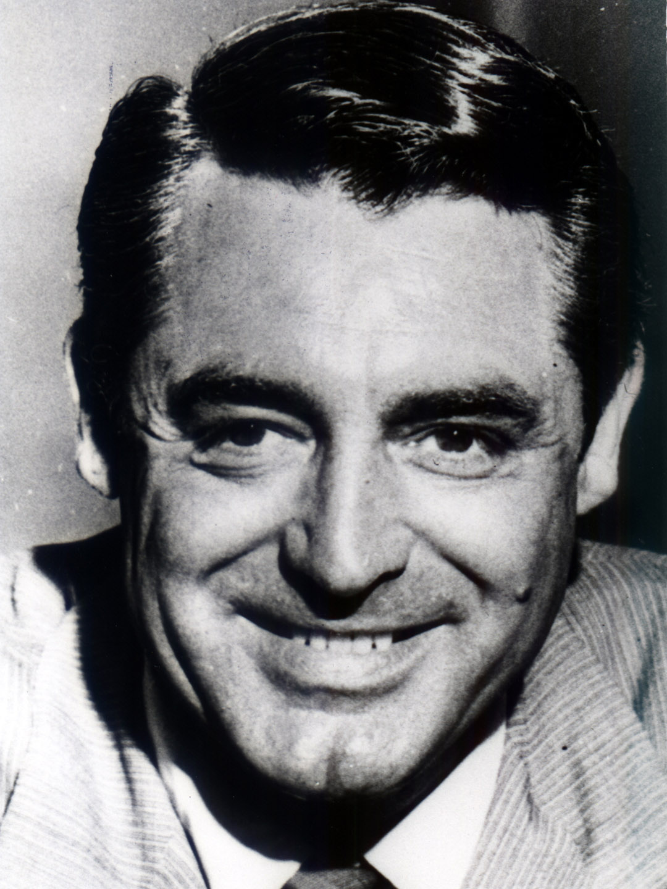
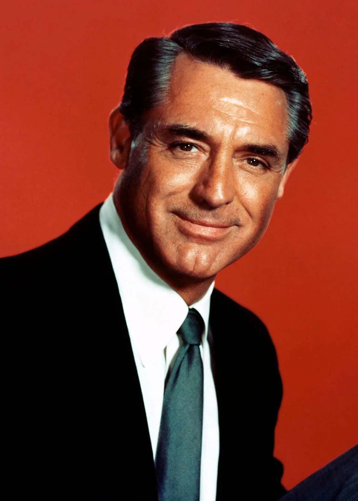
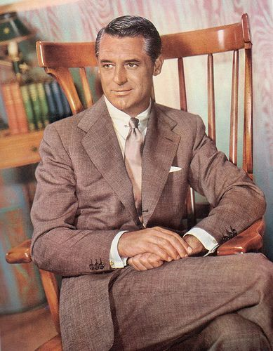

Men's clothing in the 1950s reflected a blend of traditional styles and emerging casual trends, characterized by sharp tailoring and an emphasis on sophistication. Suits were a staple, often featuring narrow lapels and a structured silhouette, with materials like wool and tweed dominating. The decade also saw the rise of the "Ivy League" look, incorporating button-down shirts, khakis, and loafers, which symbolized a more relaxed yet polished aesthetic. Casual wear included short-sleeved shirts and denim, influenced by icons like James Dean and Marlon Brando, who popularized the rebellious image of the "bad boy." Accessories such as fedoras and slim ties completed the look, reflecting a time when men's fashion was both a statement of personal style and societal expectations.